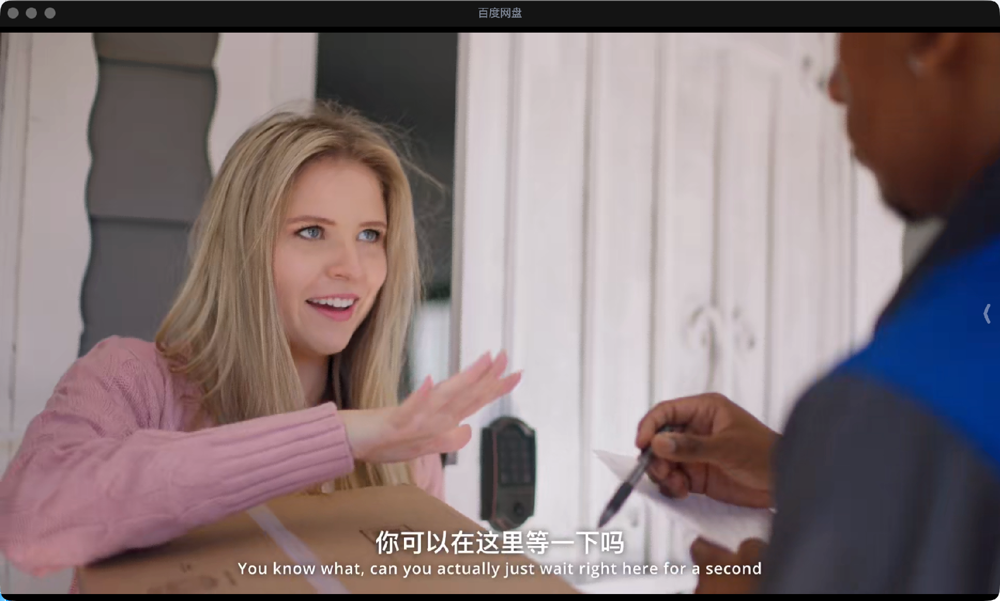
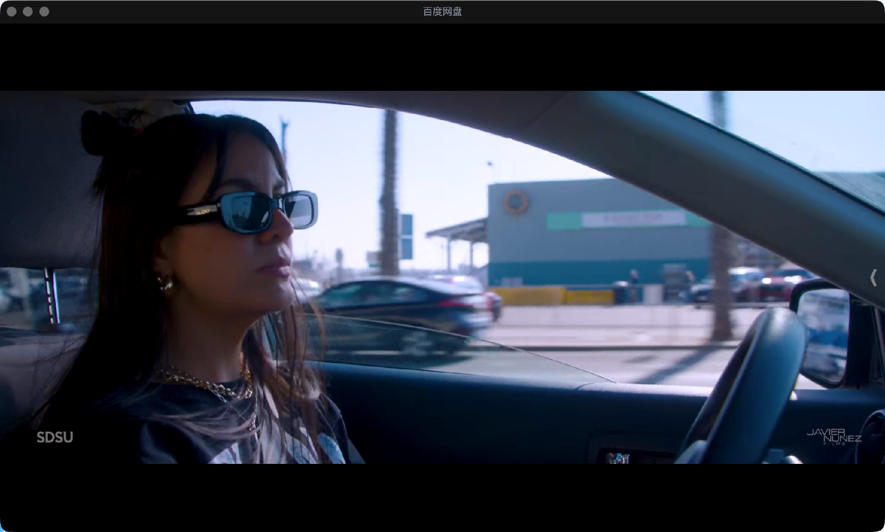

05 / FILM WORKS
Film works

Writer / Director / Editor
JUNE
Thriller · 15 min
Wrote a 12-page English screenplay and led the shoot and post-production.

DIT / Editor
REUNION
Family drama · short
Selected for Poppy Jasper International Film Festival, Watsonville Film Festival 2025 and Sunscreen International Film Festival 2025 (Florida premiere); nominated for Best Original Score by Film Scoring Network.

Editor / Sound Design
LUCIANA
Coming-of-age · 25 min
Edited and sound-designed; shot in San Diego, US.
Screeners available on request — wanwencai2026@163.com